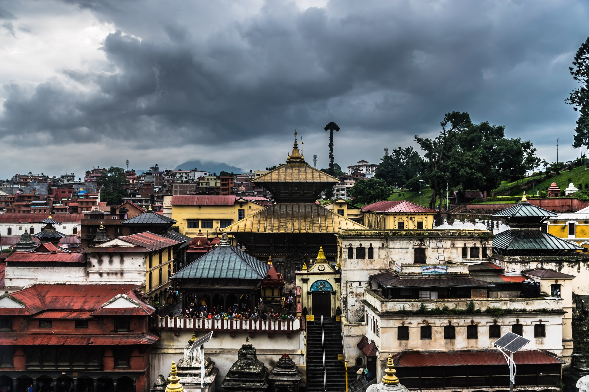
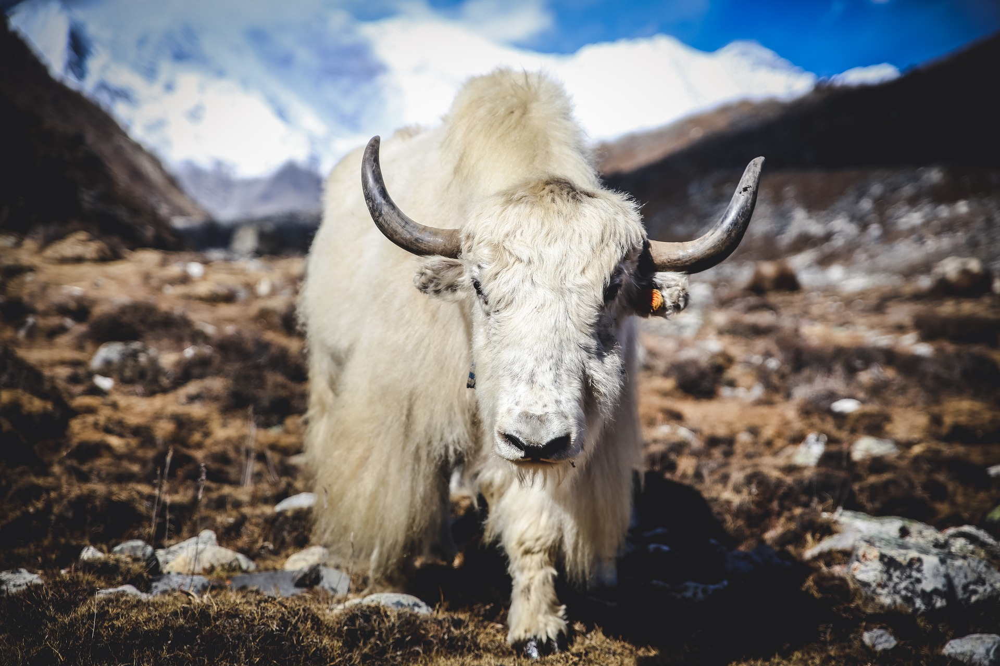
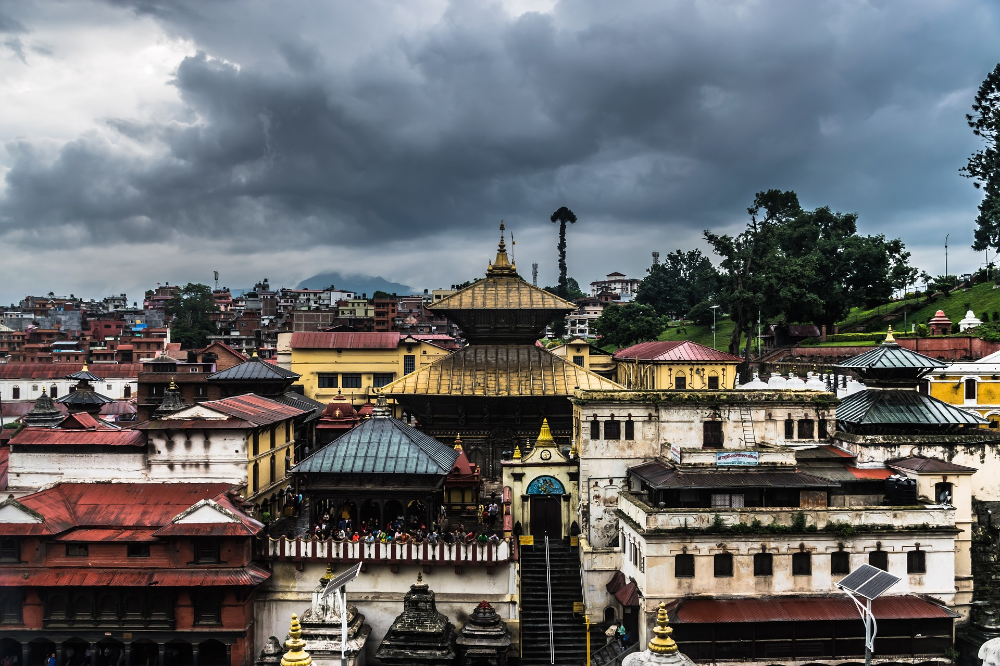
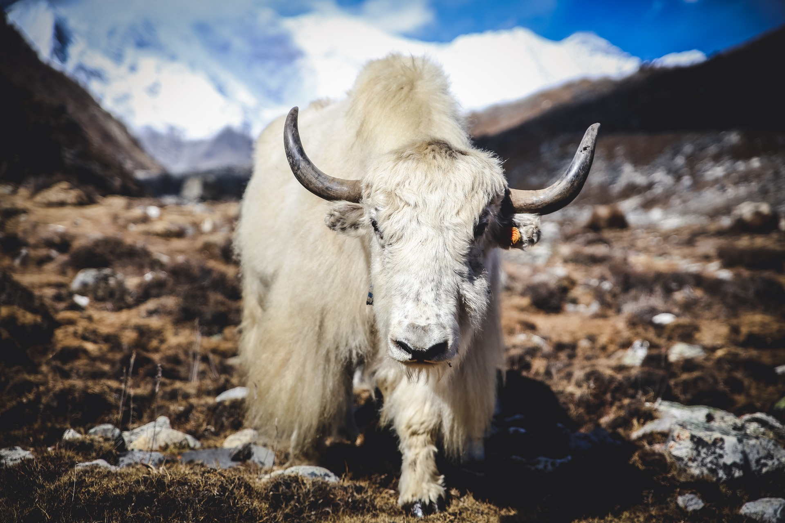

Kathmandu
Kathmandu (काठमाडौँ) is the largest city and capital of Nepal and the namesake of the Kathmandu Valley. As a result of considerable urban growth in recent decades, You will enjoy clear, blue sky and white mountains from any famous sites, of which it has many: a whopping seven UNESCO World Heritage Sites within few miles!

 


